tgauweiler / ESP01 programming board
Introduction
I did buy a ESP8266 board in the variant ESP-01. Mostly because it was so cheap. Then i noticed that programming it wasn’t working as intended, because the chip needs around 250mW 3.3V to get running and the usb to serial converter isnt providing that much docu. So I build the given circuit on a breadboard to provide enough power.
Design own platine with Eagle
But since that was pretty ugly I decided to build my own platine for it with eagle.
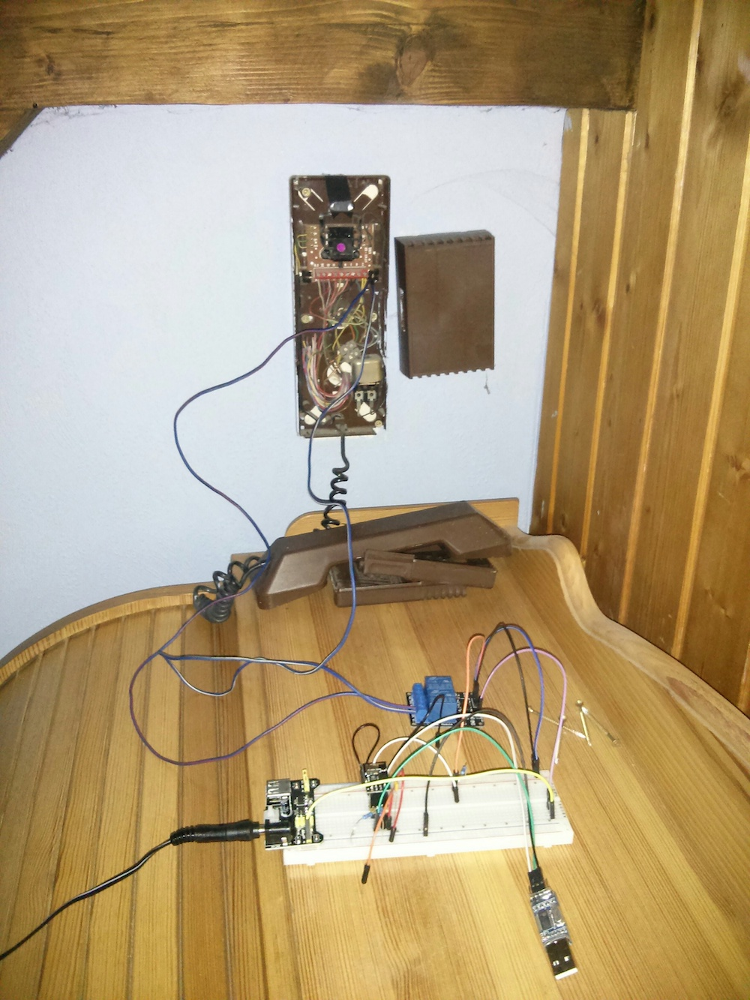
First i crated the electrical schematic with eagle.
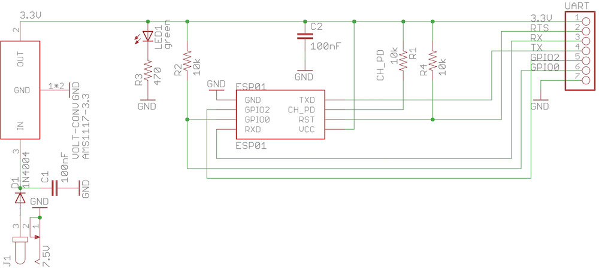
And routed everything as nice as possible.
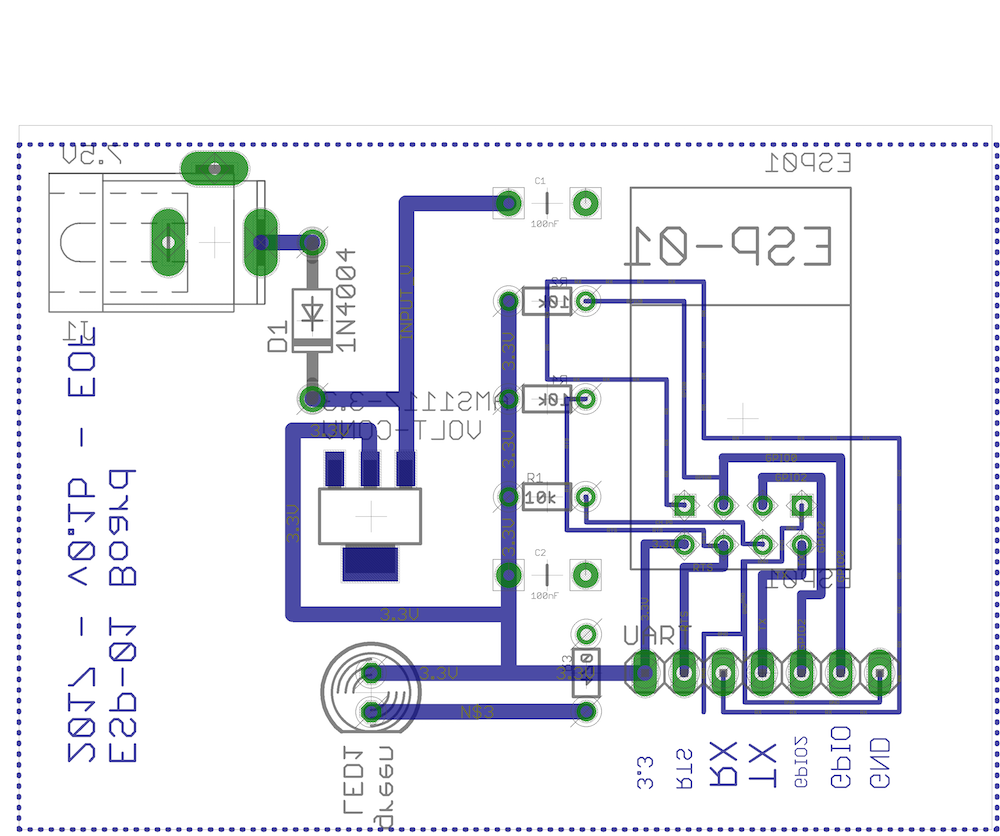
I used the toner transfer method to get the schematic on the platine.
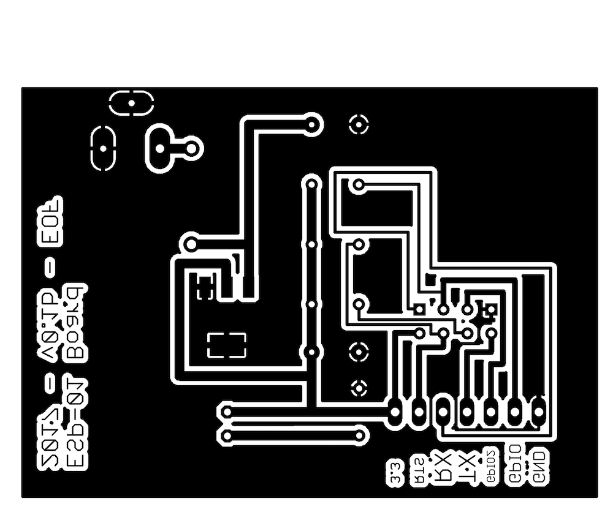
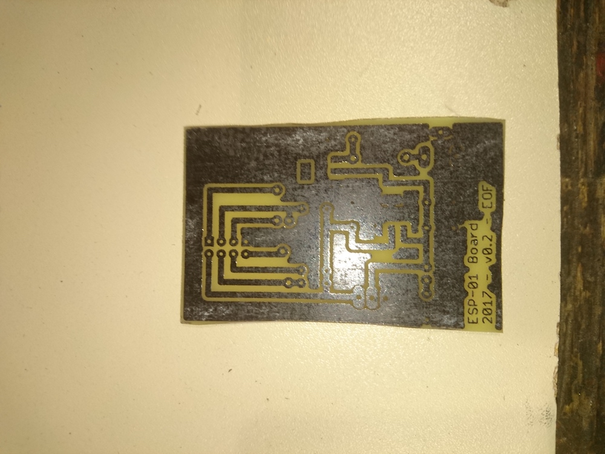
Etched it and removed the toner with aceton.
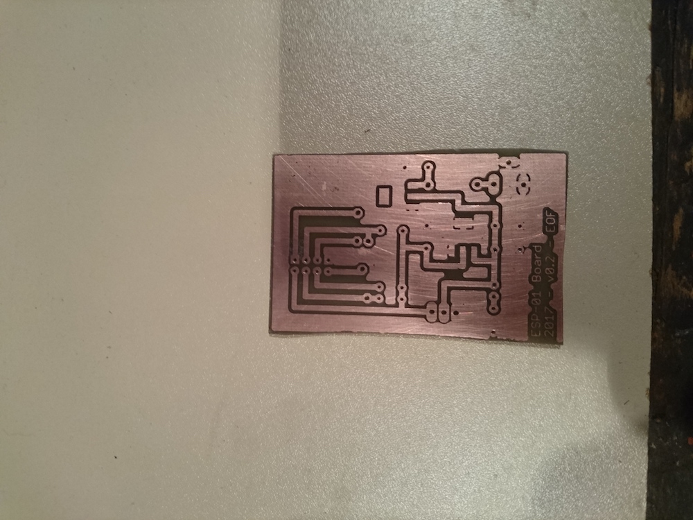
Added the schematic to the top. Drilled all holes and broke a drill.. Found out later that you can just make the pads bigger.
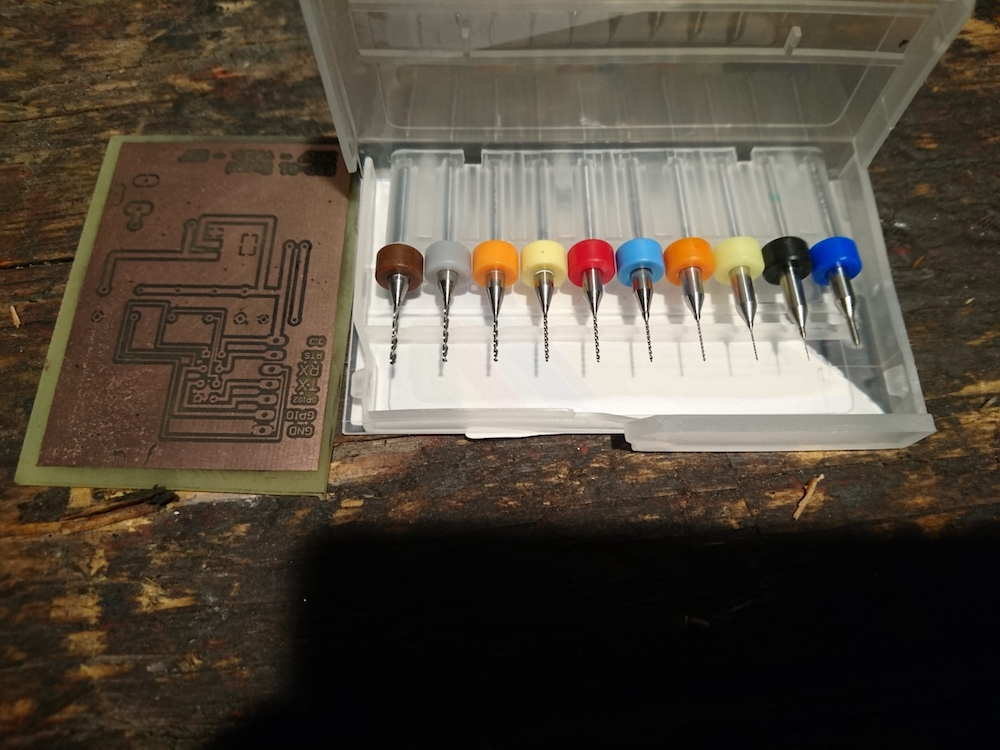 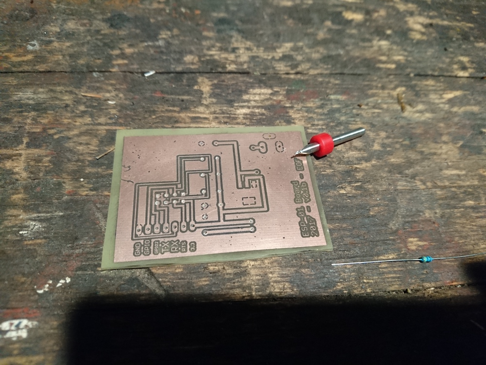 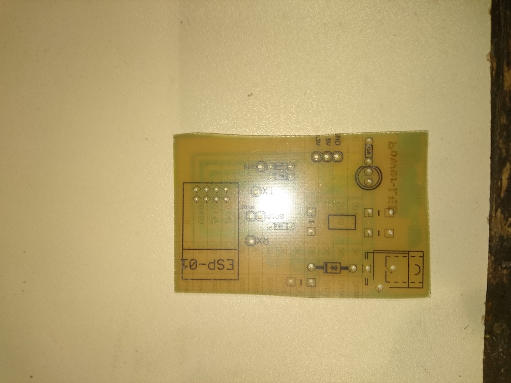
Added the electrical parts.
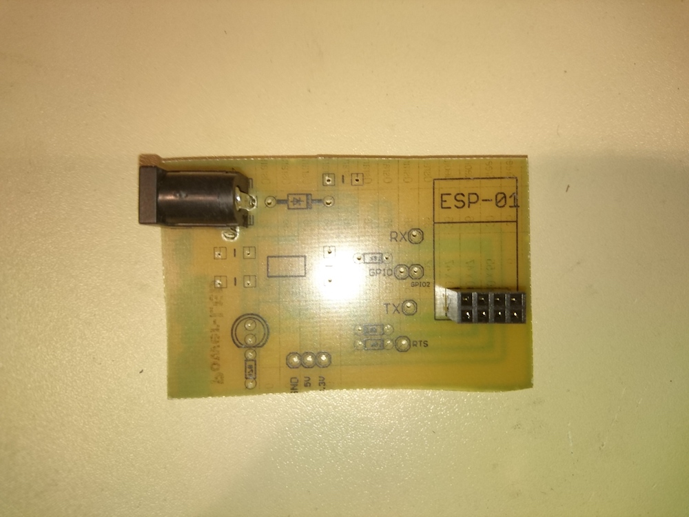 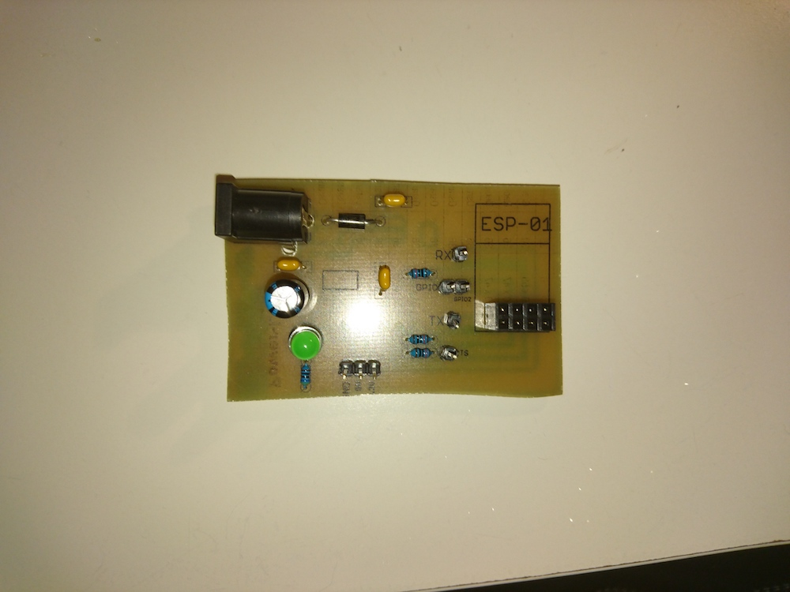
Soldered everything in place.
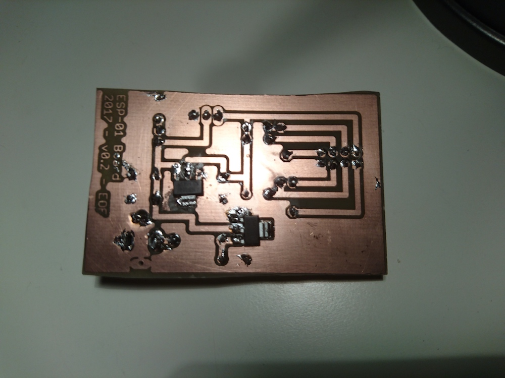
Found a old plastic box that fits perfectly everything inside.
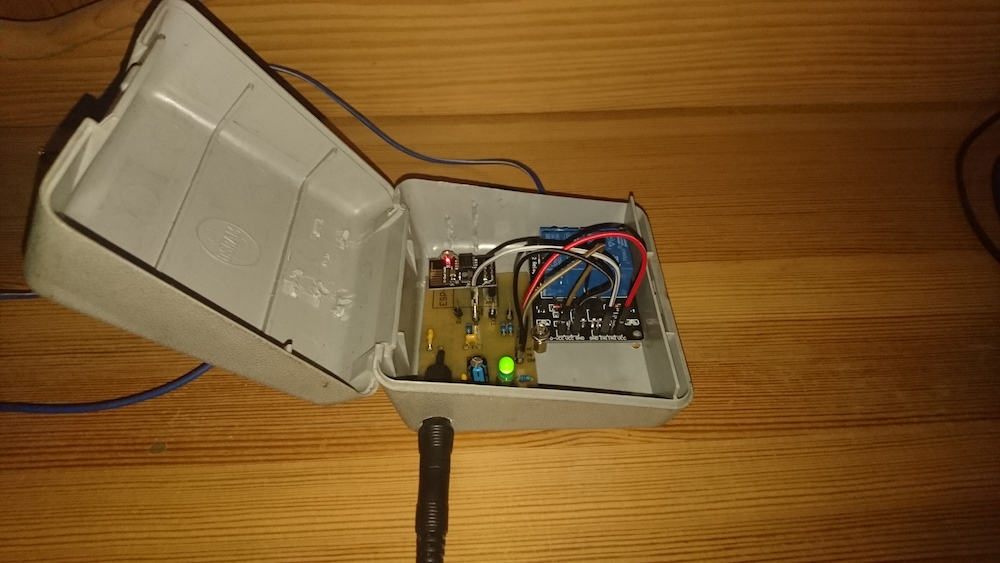